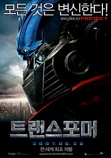

처음으로
영화:트랜스포머 1(Transformers)
트랜스포머 2
트랜스포머 3
트랜스포머 4
트랜스포머 5
트랜스포머 1(Transformers 1)
개요
평범한 고등학생, 샘 윗위키는 졸업 전 좋은 성적을 받은 것을 계기로 아버
지 로부터 중고차를 선물받게 된다. 그런데 알고 보니 이 중고차는 먼 외
온 변신 로봇 생명체였으며, 샘을 노리는 다른 세력으로부터 지키기 위해
지구에 위장해 들어와 있던 것이었다. 샘은 자신이 가진 증조부의 유품이
그들의 성물, 올스파크로 인도하는 지도라는 사실을 알게 되고, 오토봇과
디셉티콘 사이의 싸움에 휘말리게 된다.
공식 포스터

영상